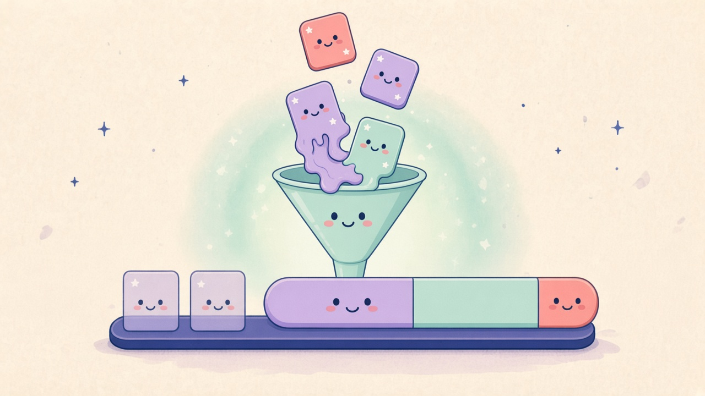

01 / App-Fusion-Paarung

Deutsch
Zwei Apps schmelzen
Halt still. Jetzt schmelzen wir.
Fensterkanten halten, Icons übereinander, Peek oder Menü. Geteiltes Glas, Finder-Ordnerwerkzeuge, ein Dock-Paar.
English
Two apps melt
Hold still. Now we melt.
Dwell on window edges, stack icons, Peek, or the menu. Shared glass, Finder folder tools, one dock pair.